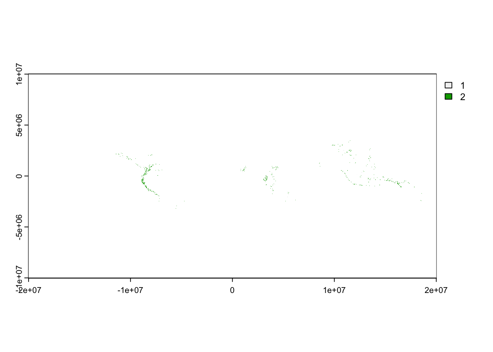
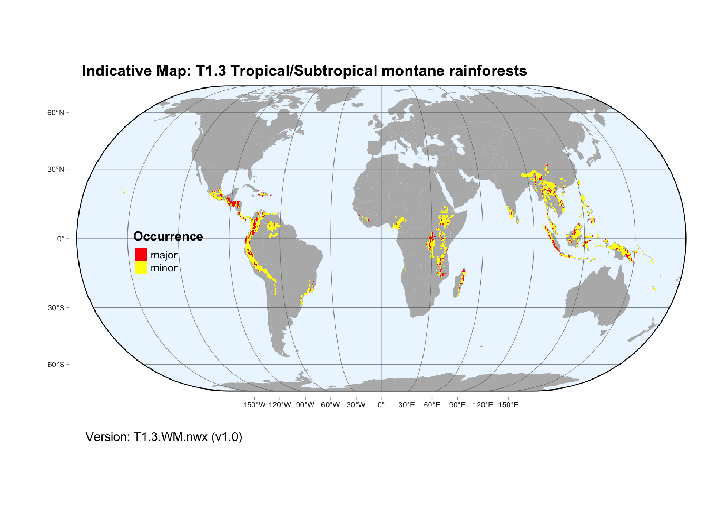

here::i_am("how2/download-with-R.qmd")here() starts at /Users/z3529065/proyectos/typology-website/typology-map-info
We use library here to define relative paths
here::i_am("how2/download-with-R.qmd")here() starts at /Users/z3529065/proyectos/typology-website/typology-map-infoWorkbook with profile content for Ecosystem Functional Groups of the IUCN Global Ecosystem Typology (Level 3 units) available at https://osf.io/4dcea
We will create a folder for data download from OSF :
out_folder <- here::here("gisdata", "profiles")
if (!dir.exists(out_folder))
dir.create(out_folder, recursive = TRUE)And now download the file there
data_url <- "https://osf.io/download/4dcea/"
dest_file <- here::here(out_folder, "IUCN-GET-profiles-exported.xlsx")
if (!exists(dest_file))
download.file(data_url, dest = dest_file)Indicative maps are available from different Zenodo repositories.
We will use libraries zen4R and parallel:
library(zen4R)
library(parallel)One repository holds the bundle of maps in compressed tar archives. This DOI (digital object identifier) automatically resolves to the latest version, but we need to be explicit when we use the parallel download (otherwise it could get stuck in the first DOI):
doi = "10.5281/zenodo.3546513"
ZR <- get_zenodo(doi=doi)
(newest_doi <- ZR$getLastDOI())[1] "10.5281/zenodo.10081251"We will create a folder for this direct download from zenodo for the latest version of the bundle:
out_folder <- here::here("gisdata", "indicative-maps-bundle","latest")
if (!dir.exists(out_folder))
dir.create(out_folder, recursive = TRUE)This can be used to download directly to the output folder. Using options(timeout=500) will get overwritten by argument, so it is needed to specify an appropriate timeout as an argument. For some reason the parallel download does not work with the path argument, so this workaround uses getwd and setwd:
output not shown
oldwd <- getwd()
setwd(out_folder)
download_zenodo(doi=newest_doi,
parallel = TRUE,
parallel_handler = parLapply,
cl = makeCluster(4),
timeout = 5000
)
setwd(oldwd)We extract maps from the tar archives in a sandbox folder:
workdir <- here::here("sandbox","latest")
if (!dir.exists(workdir))
dir.create(workdir)rast_tar <- here::here(out_folder, "all-maps-raster-geotiff.tar.bz2")
rast_list <- untar(rast_tar, list = TRUE)
untar(rast_tar, exdir = workdir)And similarly for the vector data:
vect_tar <- here::here(out_folder, "all-maps-vector-geojson.tar.bz2")
untar(vect_tar , exdir = workdir)Map details are stored in a xml file that is part of the map bundle zenodo download.
Check the file was downloaded:
map_details_file <- paste(out_folder, "map-details.xml", sep = "/")
file.exists(map_details_file)[1] TRUEWe’ll use the xml2 library to read the xml file
library(xml2)
map_details <- read_xml(map_details_file)We can query map details for an specific map:
map_details |> xml_find_first("//Map[@efg_code='T1.1']"){xml_node}
<Map efg_code="T1.1" map_code="T1.1.web.mix" map_version="v2.0" update="2020-11-08">
[1] <Functional_group>T1.1 Tropical/Subtropical lowland rainforests</Function ...
[2] <Description>Major and minor occurrences were initially identified using ...
[3] <Contributors>\n <map-contributor>JR Ferrer-Paris</map-contributor>\n < ...
[4] <Dataset-doi>10.5281/zenodo.5090450</Dataset-doi>The field with doi for the individual map are stored in the Dataset-doi tag. We can run a query for all elements containing this tag:
all_dois <- xml_find_all(map_details, "//Dataset-doi") |> xml_text()Now we use this list of DOIs to download a copy of each of the repositories containing files for each ecosystem functional group:
output not shown
oldwd <- getwd()
for (doi in all_dois) {
out_folder <- here::here("gisdata", "indicative-maps", doi)
if (!dir.exists(out_folder))
dir.create(out_folder, recursive = TRUE)
setwd(out_folder)
mycl <- makeCluster(4)
download_zenodo(doi=doi,
parallel = TRUE,
parallel_handler = parLapply,
cl = mycl,
timeout = 5000
)
#stopCluster(cl = mycl)
setwd(oldwd)
}Now we have two copies of each map file, one in the sandbox folder (extracted from the map bundle), and one downloaded directly from the corresponding record.
Map version is described in the map attributes in the xml file:
map_info <- map_details |> xml_find_first("//Map[@efg_code='T1.3']")
map_info |> xml_attrs() efg_code map_code map_version update
"T1.3" "T1.3.WM.nwx" "v1.0" "2021-11-26" The file extracted from the tar archive uses the same code for the file name:
efg_code <- map_info |> xml_attr("efg_code")
match_pattern <- sprintf("^%s", efg_code)
dir(workdir, pattern = match_pattern)[1] "T1.3.WM.nwx_v1.0.json" "T1.3.WM.nwx_v1.0.tif" As well as the file downloaded from the specific repository:
ds_doi <- map_info |> xml_find_first("Dataset-doi") |> xml_text()
downloaded_copy <- here::here("gisdata", "indicative-maps", ds_doi)
dir(downloaded_copy)[1] "README.md" "T1_3_Trop_montane_rainforests.png"
[3] "T1_3_Trop_montane_rainforests.xml" "T1.3.WM.nwx_v1.0.json"
[5] "T1.3.WM.nwx_v1.0.tif" Let’s double-check, this is the expected file name:
raster_name <-
sprintf("%s_%s.tif",
map_info |> xml_attr("map_code"),
map_info |> xml_attr("map_version"))We’ll use the terra library to read the raster file
library(terra)terra 1.7.55rast1 <- terra::rast(paste(workdir, raster_name, sep = "/"))
rast2 <- terra::rast(paste(downloaded_copy, raster_name, sep = "/"))Summary of the raster layer for the first copy:
rast1class : SpatRaster
dimensions : 20039, 40076, 1 (nrow, ncol, nlyr)
resolution : 1000, 1000 (x, y)
extent : -20038500, 20037500, -10019500, 10019500 (xmin, xmax, ymin, ymax)
coord. ref. : +proj=eqc +lat_ts=0 +lat_0=0 +lon_0=0 +x_0=0 +y_0=0 +datum=WGS84 +units=m +no_defs
source : T1.3.WM.nwx_v1.0.tif
name : T1.3.WM.nwx_v1.0 Summary of the raster layer for the second copy:
rast2class : SpatRaster
dimensions : 20039, 40076, 1 (nrow, ncol, nlyr)
resolution : 1000, 1000 (x, y)
extent : -20038500, 20037500, -10019500, 10019500 (xmin, xmax, ymin, ymax)
coord. ref. : +proj=eqc +lat_ts=0 +lat_0=0 +lon_0=0 +x_0=0 +y_0=0 +datum=WGS84 +units=m +no_defs
source : T1.3.WM.nwx_v1.0.tif
name : T1.3.WM.nwx_v1.0 The raster looks like this:
plot(rast1)
Compare this with the thumbnail downloaded from Zenodo:
library(magick)Linking to ImageMagick 6.9.12.93
Enabled features: cairo, fontconfig, freetype, heic, lcms, pango, raw, rsvg, webp
Disabled features: fftw, ghostscript, x11thmbmap <- dir(downloaded_copy,"png", full.names = TRUE)
raw_img <- image_read(thmbmap)
image_ggplot(raw_img)
We follow similar steps for the vector files.
We select the map for this functional group using the map_code and map_version from the map details xml:
vector_name <-
sprintf("%s_%s.json",
map_info |> xml_attr("map_code"),
map_info |> xml_attr("map_version"))We can read both directly from the respective folder:
vect1 <- terra::vect(paste(workdir, vector_name, sep = "/"))
vect2 <- terra::vect(paste(downloaded_copy, vector_name, sep = "/"))But notice some differences in the summaries:
vect1 class : SpatVector
geometry : polygons
dimensions : 158540, 1 (geometries, attributes)
extent : -17770500, 18911500, -3298500, 4351500 (xmin, xmax, ymin, ymax)
source : T1.3.WM.nwx_v1.0.json
coord. ref. : lon/lat WGS 84 (EPSG:4326)
names : occurrence
type : <int>
values : 2
2
2vect2 class : SpatVector
geometry : polygons
dimensions : 158540, 1 (geometries, attributes)
extent : -17770500, 18911500, -3298500, 4351500 (xmin, xmax, ymin, ymax)
source : T1.3.WM.nwx_v1.0.json (T1.3)
coord. ref. : lon/lat WGS 84 (EPSG:4326)
names : occurrence
type : <int>
values : 2
2
2